Hives and tools
Advanced Beehive
The mod's hive: 5 bees, 8 combs. When it's full (honey level 5), shear it for the combs or use a glass bottle for honey. Every vanilla wood has its own hive (and so do some modded woods); craft a hive with the planks of that wood, or recolour one by crafting it with planks. Vanilla bees can live in it too and make plain honeycomb.
Advanced Beehive
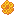
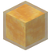
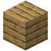
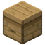
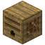
1 × Oak Advanced BeehiveReinforced Advanced Beehive
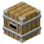
1 × Reinforced Oak Advanced BeehiveIron-banded: resists explosions like obsidian.
Calm or busy
Use a Bubba Star on a hive to switch its bees between calm and busy (the star isn't used up). Calm is the default: bees fly like vanilla bees, wander a little, and stay inside twice as long. Busy bees fly faster, go straight back to flowers they know, and spend half as long in the hive. The hive panel shows which mode a hive is in. Every rate in this guide is for busy hives.
Hive panel
Look at a hive and a small panel at the top of the screen shows its name, honey level, calm or busy mode, how long its smoke lasts, and every bee inside with the time until it flies out. If you play with Jade, the same information shows in Jade's panel instead.
Comb Chute
Place it under a hive. When the hive is full it harvests it in one go, as if sheared, without angering the bees, and pushes the items down like a hopper (pipes can pull from it too).
- Comb mode takes the combs (a vanilla hive gives 3 honeycomb).
- Honey mode fills one glass bottle with honey per harvest instead (the combs are lost, as when you bottle by hand). Right-click with glass bottles to load it; hoppers and pipes can feed bottles from the sides.
- Right-click with an empty hand to switch modes (shown on its top).
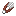
Smokers
Use a smoker on a hive before you harvest it and the bees stay calm. The iron smoker smokes for 30 seconds, the copper smoker for 15.
Iron Smoker
Copper Smoker
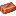
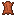
Bee Jar
Use an empty jar on any bee to catch it; use the full jar on a block to let it out. The jar keeps the bee, pollen and all, and shows which bee is inside. The royal queen fits too.
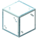
Royal jelly
From the royal queen's combs. It counts as a slimeball, you can eat it (1 hunger bar), and it makes:
Royal Jelly Block
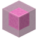
1 × Royal Jelly BlockMoves with pistons like a slime block but doesn't stick to slime or honey blocks, and doesn't bounce. Anything on it sinks in, is held fast for a moment, then breaks free.
Pink Sticky Piston
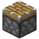
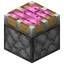
1 × Pink Sticky PistonPedestals and the altar
Pedestals show an item that bobs and turns. The rituals need four (any kind) and a Celestial Altar.
Stone Pedestal
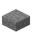
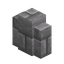
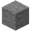
Deepslate Pedestal
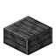
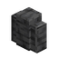
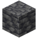
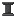
2 × Deepslate PedestalBlackstone Pedestal
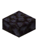
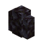
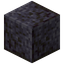
Quartz Pedestal
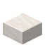
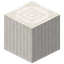
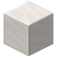
Celestial Altar
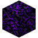
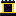
1 × Celestial AltarThe centre of both rituals. It glows and spins its item faster while a ritual runs.
Stardust
From starlight bee combs. Place it like redstone dust: it glows (light 7), joins up with other dust, pedestals and end rods, and climbs the side of an end rod next to it. It carries no redstone signal. The Celestial Ritual's circle is made of it.
Lava cauldron
Magma bees flying over a cauldron fill it a quarter at a time (25% per pass). A quarter, half and three-quarter cauldron show their level; at four quarters it becomes a vanilla lava cauldron. Other mods can pump the lava (250 mB per quarter).